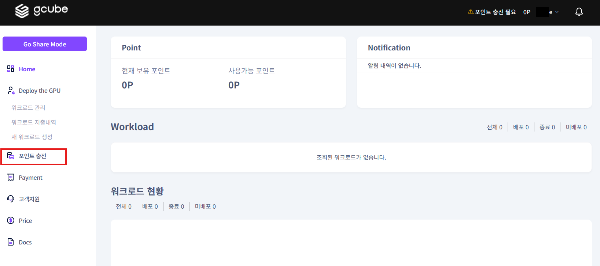
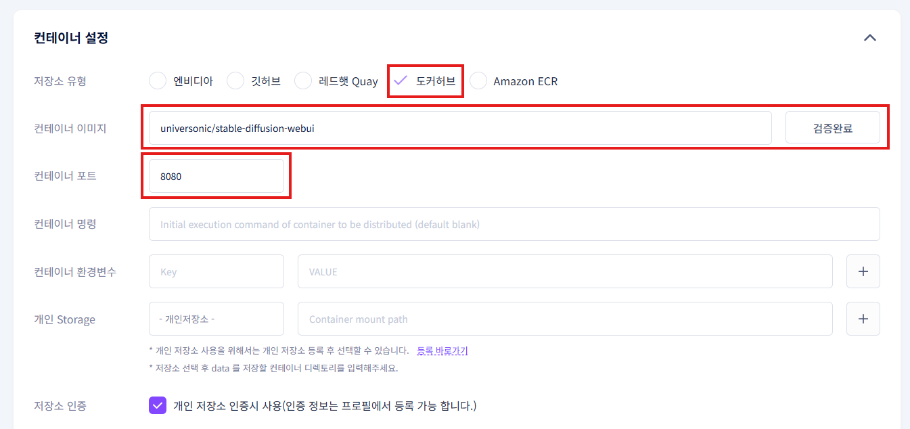
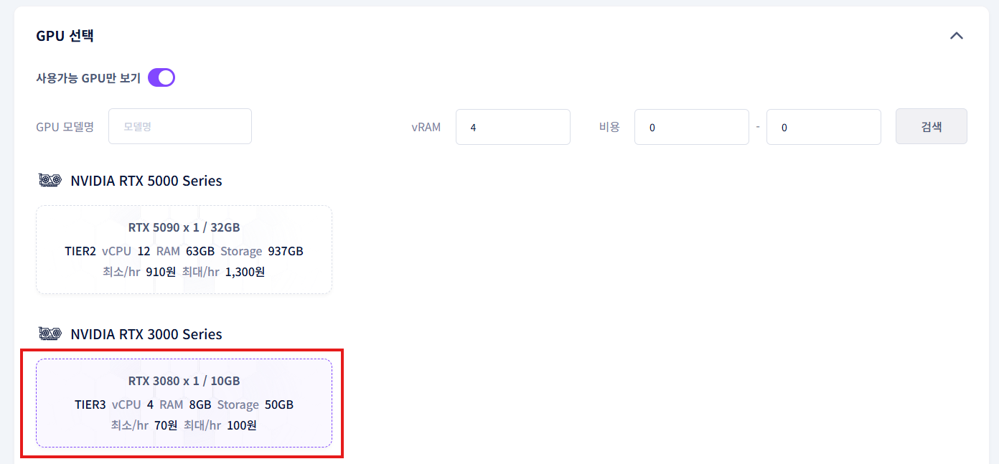
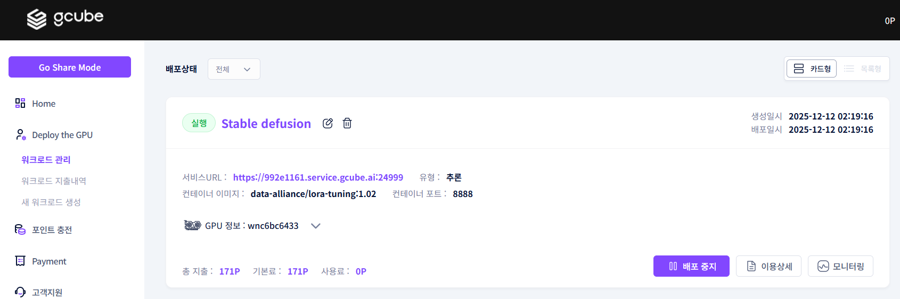
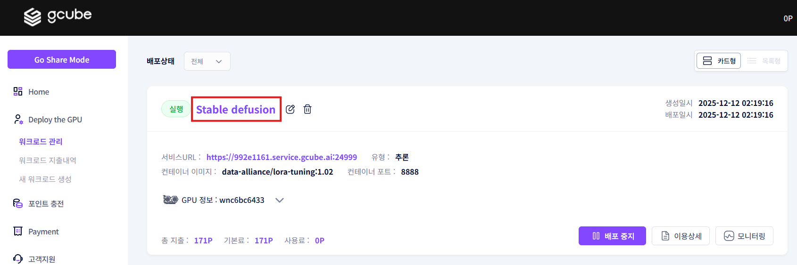

Stable Diffusion 사용 가이드
0. 사전준비
-
Stable Diffusion란?
- Text-to-Image, Image-to Image 오픈소스 생성형 인공지능 모델
- 컴퓨팅 리소스를 대폭 줄여 GPU가 장착된 개인 컴퓨터에서도 실행 가능
- 온라인 환경이 아닌 개인의 PC에서 ‘로컬 환경’으로 설치 및 실행 가능
-
gcube 회원 가입 및 포인트 구매
- gcube 홈페이지(http://gcube.ai)에서 회원 가입 진행


- 로그인하여 사용자 모드로 접속

- 좌측의 “포인트 충전” 메뉴를 클릭

- 원하는 만큼의 충전 포인트를 클릭 후 결제 방법을 선택, “결제” 버튼으로 결제 진행

1. gcube 플랫폼 stable diffusion 워크로드 준비
-
새 워크로드 등록
- 로그인 후 좌측측의 “새 워크로드 생성” 메뉴를 클릭

-
워크로드 정보 stable diffusion 세팅
- 설명 : 워크로드 설명에 [ Stable Diffusion ]을 입력

- 컨테이너 : stable diffusion을 사용할 컨테이너 이미지 설정
- 저장소 유형 : 도커허브
- 컨테이너 이미지 : [ universonic/stable-diffusion-webui ]
- 입력란 옆 이미지 검증 버튼 클릭하여 검증 완료 시 컨테이너 포트는 자동으로 입력
- 컨테이너 포트 : 8080 (자동으로 포트 설정)

- 목적 스펙 : stable diffusion이 구동 될 환경을 설정
- 목적노드 : Tier 3 (개인 사용자들을 위한 티어)
- GPU 메모리 : 8GB
- GPU : RTX 3080 X 1 10GB

- 옵션 (선택 사항) : 컨테이너 세부 설정
- 컨테이너 명령 : 컨테이너 시작 명령어를 설정. 공란일 때 기본 명령어 실행
- 컨테이너 환경변수 : 컨테이너 내부에서 사용할 환경 변수를 설정
- 레플리카 : 동일한 컨테이너의 병렬 실행 개수를 설정
- 최소 CUDA 버전 : 컨테이너가 요구하는 최소 CUDA 버전을 지정
- 공유 메모리 : 컨테이너가 공유 가능한 메모리 크기를 지정
- ※ 이번 가이드에서는 옵션 설정을 하지 않고 진행

- 총 예상 금액 : 선택한 서비스에 대한 예상 사용 요금을 산정
- 즉시 배포 옆 체크박스를 클릭하여 등록과 동시에 배포
- “등록” 버튼으로 워크로드 등록

2. gcube 플랫폼 stable diffusion 워크로드 실행
- 워크로드 등록 후 화면

-
생성된 워크로드 정보 확인
- “Stable Diffusion”을 클릭

- 워크로드 정보 화면 가장 하단의 “배포 상태”를 확인

- 배포 상태의 피드 상태가 “실행”인지 확인
- “컨테이너 로그” 버튼 클릭

- 컨테이너 로그에서 이미지와 같은 문구가 나오면 설치 완료
- ※ 컨테이너 설정과 실행하는 기기에 따라서 시간이 다소 걸릴 수 있습니다.(최대 30분)

- 워크로드 정보 화면으로 돌아와 “서비스 URL 링크”을 클릭
- ※ 컨테이너 로그 확인 없이 링크를 클릭 시 작동 화면이 표시되지 않을 수 있습니다.

- 아래와 같은 화면이 나온다면 Stable Diffusion 작동 성공

3. gcube 플랫폼 stable diffusion 실행 예시
-
Stable Diffusion 실행 예시
- txtimg칸에 “A cat in a Hat” 문구를 입력 후 “Generate” 버튼 클릭

- 아래와 같은 이미지가 생성되는 것을 확인
- ※ 표시되는 이미지는 상이할 수 있습니다.